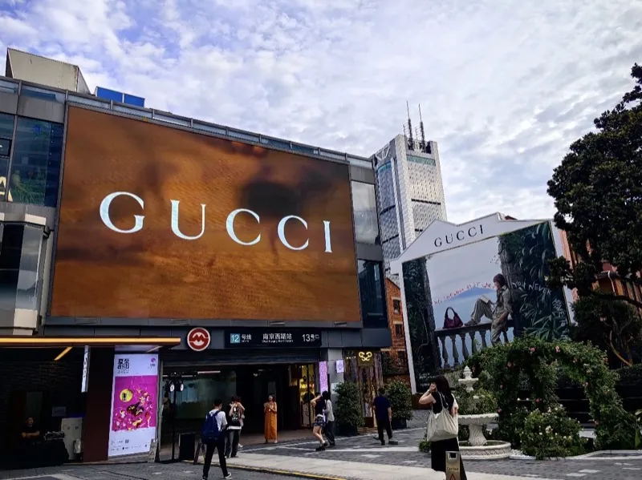
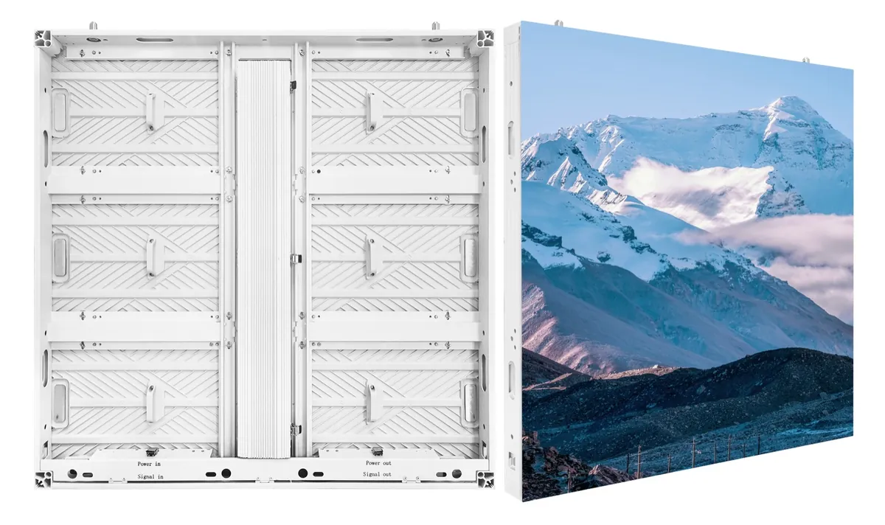
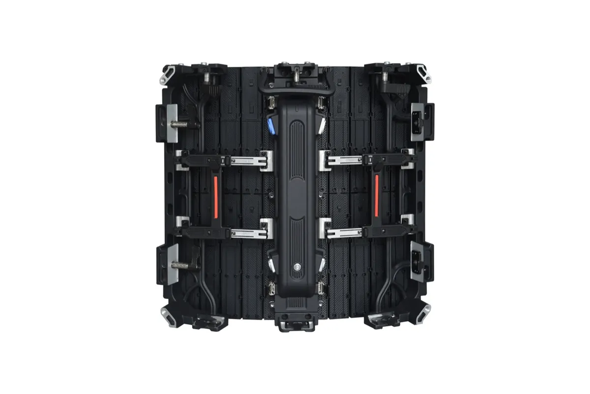
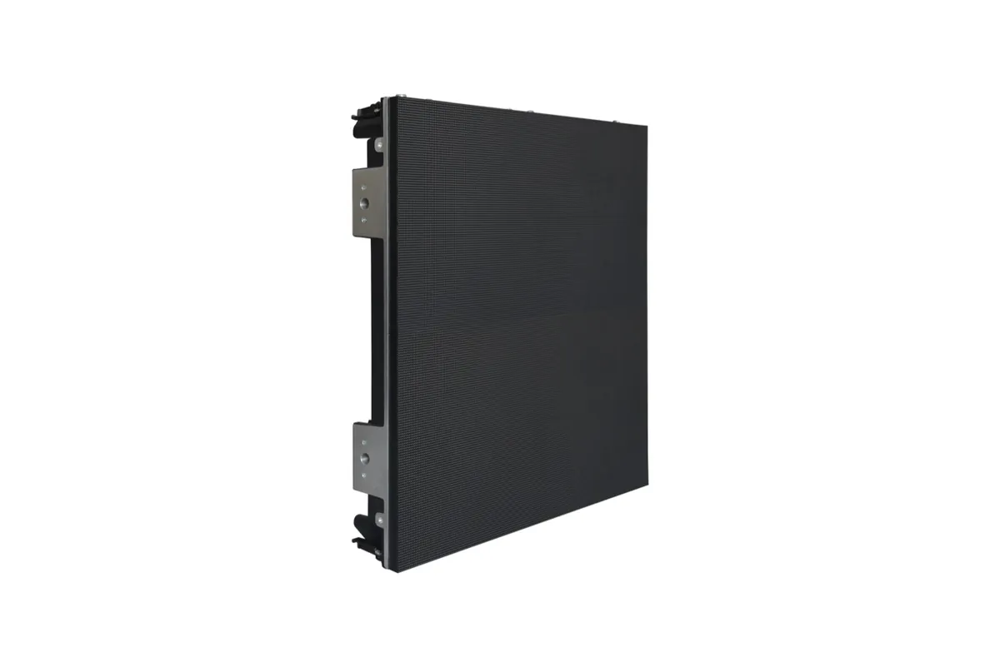

An outdoor LED wall is exposed to whatever the season brings. Large outdoor screen at a public event in Le Mans (Asia Vision case library).
Outdoor LED Displays in Freezing Weather: Operating Limits, Condensation, Snow and Ice
2026-11-16Asia VisionTechnical Guide
Can an outdoor LED display work in freezing weather? Yes, if the cabinet, power supplies, cables and seals are rated for the temperature and the project is planned for the cold. A rated operating range such as −20 °C to +50 °C tells you the lowest ambient temperature the manufacturer designed the screen to run in. It does not tell you how the screen starts, how it handles moisture when it warms up, or how it copes with ice and snow load. Those are separate questions, and they are the ones that cause winter failures.
This guide is for integrators, importers and facility owners buying an outdoor LED wall for a market with real winters: Canada, the Nordic countries, Poland, Kazakhstan, Mongolia, Korea and the northern United States, among others. It is the cold-weather companion to the cooling and ventilation guide, which covers heat, and it builds on the IP rating guide for water and dust. It does not claim that any screen is suitable for any temperature; it tells you what to read, what to ask and what to test.
What the Rated Temperature Range Actually Means
A specification sheet usually carries two temperature lines: a working (operating) range and a storage range. They are not the same thing.
Working range is the ambient temperature in which the screen is designed to run, with the electronics powered. The lower limit is the number that matters for a winter project.
Storage range is the temperature the screen can sit in, unpowered, without damage. It is usually wider than the working range and says nothing about running in the cold.
Humidity range sits on the same line and matters as much as the temperature, because condensation depends on both.
Asia Vision's outdoor series publish the same temperature lines on their specification sheets:
So the published working floor is −20 °C. If your site records colder than that, the specification sheet does not cover it, and you should ask the factory before ordering rather than assume the screen will cope. A wall that is rated for −20 °C at the cabinet level is also only as good as the weakest part of the system, including cables, connectors, power supplies and the control equipment that sits outside the cabinet.

A fixed outdoor facade screen runs through every season, so the rated temperature range has to cover the coldest night, not the average day. Outdoor P6 LED billboard in Shanghai (Asia Vision case library).
What Cold Does to an LED Display
Cold affects an outdoor wall in several different ways. They do not all show up at the same moment.
Cold start. The first power-on after a very cold night is the most stressful moment for power supplies and other electronics. Ask for the minimum start-up temperature, which can be different from the lowest running temperature.
Brittle materials. Rubber gaskets, cable jackets and plastic parts can harden and crack at low temperature. A cracked seal is how water gets in. Ask what the gaskets and cable jackets are rated for.
Contraction. Aluminium cabinets and steel structures shrink as they cool. Joints that were tight at installation can open slightly, and seams can appear that were not there in summer. See the seam guide.
Condensation and ice. This is the largest cold-weather risk and gets its own section below.
Light output and colour. LED output and driver behaviour change with temperature. Ask whether the brightness and colour specification is stated at the minimum temperature or only at room temperature.
A running wall also warms itself. The EH-PRO specification sheet lists an average power consumption of up to 260 W/m², and D-PRO up to 310 W/m². A 10 m² wall at those averages dissipates up to roughly 2.6 kW and 3.1 kW as heat once it is running. That self-heating helps a running screen but does nothing for the first power-on, and it does not help a wall in standby or switched off overnight. Peak consumption is higher; the sheets list ≤680 W/m² for EH-PRO and ≤620 W/m² for D-PRO.

Rear and front of an outdoor D-PRO cabinet, a 960 × 960 mm aluminium unit rated IP65 with a published working range down to −20 °C (Asia Vision product photo).
Condensation: The Quiet Winter Killer
An IP65 cabinet keeps rain and dust out. It does not stop moisture that is already inside, or moisture that forms inside when the temperature changes. IP65 means dust-tight and protected against water jets; it is a statement about ingress from outside, not about what happens to the air that is sealed in the cabinet.
The mechanism is simple. Warm, humid air in a sealed cabinet cools overnight. When internal surfaces fall below the dew point, water condenses on the circuit boards, connectors and power parts. When the temperature drops below freezing it becomes frost, and when the screen warms up it melts and runs. Repeated cycles cause corrosion and short circuits.
Three situations deserve special attention:
Shipping and storage. Cabinets packed in a humid factory or port and shipped to a cold site carry that humid air with them. Let cases acclimatise to the site temperature before opening and powering on.
Daily cycles. A wall that is warm during the day and drops well below freezing at night goes through a condensation cycle every day.
Power-on from cold. The first start after a cold night puts power into cold, possibly damp electronics.
Common engineering responses include conformal coating on circuit boards, sealed connectors, desiccants, breather vents and low-power warming. These are general industry practices, not statements about any Asia Vision product. The product pages and specification sheets do not publish a conformal coating, a breather vent, a desiccant or a heater option, so ask whether any of them applies to your series. For related humidity and salt issues, see the coastal and salt-spray guide.
Snow, Ice and Wind-Driven Snow
Snow load. Snow sits on the top edge of a wall and on any ledge, and it can add substantial weight. The structure should be designed by an engineer against the site's snow and wind loads; the screen supplier provides weight and dimensions. Published weights include 9.5 kg for the 500 × 500 × 90 mm EH-PRO cabinet, 9.1 kg for the EF cabinet and 27 kg for the 960 × 960 × 83 mm D-PRO cabinet. See also the wind load and ballast article.
Ice on the face. Ice on the screen surface scatters light and cuts brightness and contrast. Do not scrape it with hard tools. Ask the supplier how the surface should be cleaned and de-iced.
Drifts and bottom rows. Snow can bury the lower rows of a ground-level or low-mounted wall, and meltwater collects at the base.
Wind-driven snow. Fine snow gets into gaps. It is the reason sealing at joints, cable entries and power boxes matters.
Service in winter. A wall that needs rear access is hard to service in snow. Front-maintenance designs, such as the EF cabinet with front-service magnets and safety cords and the D-PRO front-maintenance module, let a technician replace a module from the face.

Rear of an EH-PRO cabinet. Latches, connectors and the power box are the parts to ask about for low-temperature ratings (Asia Vision product photo).
A Cold-Site Checklist Before You Order
Record the real climate. Lowest recorded temperature, typical winter night, humidity, snow depth, wind and the number of freeze-thaw cycles a year.
Compare with the working range. If the site goes below −20 °C, treat the published range as not covering it and ask for written confirmation.
Ask for the minimum start-up temperature and the recommended start-up procedure after a cold soak.
Ask about cold-rated parts. Gaskets, cable jackets, connectors and the power supplies.
Ask about moisture control. How the cabinet handles condensation and whether the internal air is vented or sealed.
Ask for test evidence. A cold-chamber test report to a recognised method, such as IEC 60068-2-1 (Test A: cold), for the product or a comparable one.
Plan acclimatisation. Allow cases to reach site temperature before opening and powering on.
Plan winter service. Front or rear access, spare modules on site, who attends, and how fast.
Design the structure for snow. Drainage, top-edge detail and clearance from the ground.

Side profile of an EH-PRO 500 × 500 × 90 mm cabinet. Cabinet depth and drainage detail influence where snow and meltwater collect (Asia Vision product photo).
What Asia Vision Publishes, and What It Does Not
The published facts: the outdoor series above are rated IP65 and carry a working range of −20 °C to +50 °C at 10–95% RH, with storage down to −40 °C. The EF specification sheet states front and rear protection class IP65. The D-PRO page offers common cathode and common anode options and notes that common cathode reduces running power. The factory page lists 72-hour burn-in ageing for every display, which is a factory step, not a cold test.
Not published: a minimum start-up temperature, a cold-chamber test report, the low-temperature rating of gaskets, cables and connectors, a heater or anti-condensation option, a snow-load rating, or performance data at −20 °C. The COB ZH page quotes wind resistance up to 20 m/s but no snow load. If your site is at or below −20 °C, or your project is mission-critical, ask for these items in writing and build them into the order. For the import and compliance side of a cold-climate market, see the Canada importer guide, the Nordic market guide or the Finland importer guide.
What to Put in the RFQ
Suggested RFQ wording: "The site experiences a minimum ambient temperature of [value] °C, relative humidity of [range] and snow depth of [value]. The bidder shall state the working and minimum start-up temperature of the proposed outdoor LED series, the low-temperature ratings of gaskets, cables, connectors and power supplies, and the measures taken against internal condensation and ice. The bidder shall provide a cold-chamber test report or state that none exists. The bidder shall state the procedure for start-up after a cold soak and for de-icing the screen face."
Add the site address, a photo of the proposed location, the structure drawing and the service plan. Product pages publish a 3-year warranty and 18-day standard factory dispatch; ask whether the warranty applies at the stated minimum site temperature.
FAQ
Q: Can an outdoor LED screen work at −20 °C?
A: The Asia Vision outdoor series list a working range of −20 °C to +50 °C on their specification sheets. That is the published lower limit. Ask for the minimum start-up temperature and any cold-test evidence if your site reaches that temperature.
Q: What is the difference between operating and storage temperature?
A: The operating range is the ambient temperature in which the powered screen is designed to run. The storage range is what the unpowered screen can sit in without damage and is usually wider. For the Asia Vision outdoor series, working is −20 °C to +50 °C and storage is −40 °C to +70 °C.
Q: Does IP65 protect an LED display from condensation?
A: No. IP65 describes dust-tightness and protection against water jets from outside. Condensation forms from moisture inside the cabinet when the temperature drops, so it depends on the cabinet design, internal air and moisture control as well as the IP rating.
Q: Should an outdoor LED wall be left powered in winter?
A: That depends on the supplier's instructions for your series. A running wall warms itself, with the average power figures on the specification sheets showing how much heat it can produce, but start-up after a cold soak is the risky moment. Ask the factory for the recommended standby and start-up procedure for your climate.
Q: Does Asia Vision publish a snow load or cold start-up rating?
A: The product pages and specification sheets do not publish a snow-load rating, a minimum start-up temperature or a cold-chamber test report. They publish the working and storage temperature ranges and IP65 protection. For a cold-climate project, request these in writing.
Sources
Asia Vision specification sheets (/downloads/specs/): AV-EH-PRO COB v1.0, AV-EF Outdoor Fixed COB v1.0, AV-D-PRO v2.0, AV-S Outdoor v2.1 and AV-EPH v1.0: working temperature and humidity range (−20 °C to +50 °C, 10–95% RH), storage range (−40 °C to +70 °C), protection level IP65, cabinet weights and power consumption.
Asia Vision product pages: COB EH-PRO, COB EF, D-PRO, COB ZH. Factory page: 72-hour burn-in ageing for every display.
IEC 60529 (ingress protection codes) and IEC 60068-2-1 (environmental testing, Test A: cold) as general references for what the ratings and tests mean.
Public supplier pages on low-temperature outdoor LED design (for example ABX LED, YES LED, Skyworth Display, Suntune Signage, Conwin LED) were read for the research notes on common practices such as sealing, conformal coating, desiccants and warming. They are not sources for any Asia Vision product claim.
Planning an outdoor LED wall for a cold climate? Send the lowest recorded temperature, the humidity and snow data, and the mounting design, and we will reply with the cabinet data and what can be confirmed in writing. Start a project enquiry.